Example analysis notebook - single cell studies database
Example analysis notebook - single cell studies database#
This notebook produces figures in the manuscript A curated database reveals trends in single cell transcriptomics
Notebook repository: https://github.com/vals/single-cell-studies/
The database is available at: https://www.nxn.se/single-cell-studies/
Running this notebook will save the following figures in the current folder:
all_studies.pdf
biorxiv_over_time.pdf
cells_per_month.pdf
clustering_over_time.pdf
clusters_per_cells.pdf
pseudotime_over_time.pdf
scrnaseq_studies.pdf
studies_over_time.pdf
techniques_over_time.pdf
tsne_over_time.pdf
# %pylab inline
# %config InlineBackend.figure_format = 'retina'
import io
import matplotlib.font_manager
from mizani.breaks import date_breaks
from mizani.formatters import date_format
# Only pandas >= v0.25.0 supports column names with spaces in queries
import pandas as pd
ts = pd.Timestamp # Alias for pd.Timestamp
import plotnine as p
import requests
import numpy as np
import statsmodels.api as sm
import statsmodels.formula.api as smf
import warnings
import matplotlib.colors as mplcol
import colorsys
warnings.filterwarnings("ignore") # plotnine has a lot of MatplotlibDeprecationWarning's
url = "http://nxn.se/single-cell-studies/data.tsv"
df = pd.read_csv(url, sep='\t')
# converts string to date format, can only be run once!
df['Date'] = pd.to_datetime(df['Date'], format='%Y%m%d')
# converts string of reported cells total to float, can only be run once!
df['Reported cells total'] = df['Reported cells total'].str.replace(',', '').map(float)
print(df.shape)
(1630, 28)
# plot number of studies over time
p.options.figure_size = (9, 2)
fig = (
p.ggplot(p.aes(x='Date', y='DOI'), data=df.resample('1M', on='Date').count()[['DOI']].reset_index())
+ p.geom_bar(stat='identity')
+ p.theme_minimal(base_family='Arial')
+ p.scale_x_datetime(breaks=date_breaks('1 years'), labels=date_format('%Y'))
+ p.labs(y='Number of studies')
)
fig.save('studies_over_time.pdf')
print(fig)
findfont: Font family ['Arial'] not found. Falling back to DejaVu Sans.
findfont: Font family ['Arial'] not found. Falling back to DejaVu Sans.
tdf = df.assign(Technique = df['Technique'].str.split(' & ')).explode('Technique')
# Technique dictionary for top 5 techniques
t_dict = {k: k for k in tdf['Technique'].value_counts().head(5).index}
t_dict
{'Chromium': 'Chromium',
'Smart-seq2': 'Smart-seq2',
'SMARTer (C1)': 'SMARTer (C1)',
'Drop-seq': 'Drop-seq',
'SMARTer': 'SMARTer'}
# Maps remaining techniques to 'Other'.
tdf['Technique'] = tdf['Technique'].map(lambda s: t_dict.get(s, 'Other'))
# list of techniques in alphabetic order for the plot with 'Other' at the end.
techs = list(
tdf['Technique']
.value_counts()
.sort_index()
.index
.difference(['Other'])
)
techs.append('Other')
tdf['Technique'] = (
pd.Categorical(
tdf['Technique'],
categories=techs,
)
)
def lightness(color, lightness):
'''Proportionally modulate color.
'''
rgb = mplcol.colorConverter.to_rgb(color)
h, l, s = colorsys.rgb_to_hls(*rgb)
l = lightness
new_color = colorsys.hls_to_rgb(h, l, s)
hex_color = '#{:02x}{:02x}{:02x}'.format(*map(lambda c: int(c * 255), new_color))
return hex_color
# Lighten matplotlib default colors
clrs = list(map(lambda c: lightness(c, 0.8), ['C0', 'C1', 'C2', 'C3', 'C4', 'grey']))
# Plot number of studies per month by technique
per_month = (
tdf
.groupby('Technique')
.resample('1M', on='Date')
.count()['DOI']
.reset_index()
)
p.options.figure_size = (9, 2)
fig = (
p.ggplot(
p.aes(x='Date', y='DOI', fill='Technique'),
data=per_month.query('Date > @ts("20130101T010101")')
)
+ p.geom_bar(stat='identity', color='grey')
+ p.theme_minimal(base_family='Arial')
+ p.scale_x_datetime(
breaks=date_breaks('1 years'),
labels=date_format('%Y')
)
+ p.labs(y='Number of studies')
+ p.scale_fill_manual(clrs)
)
fig.save('techniques_over_time.pdf')
fig
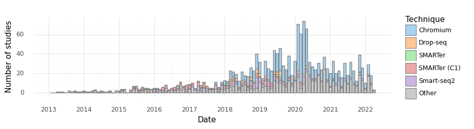
<ggplot: (8746838557684)>
# plot number of studies doing clustering over time
tdf = df[['Date', 'Cell clustering', 'DOI']].dropna()
tdf['Date'] = pd.to_datetime(tdf['Date'], format='%Y%m%d')
per_month = (
tdf
.groupby('Cell clustering')
.resample('1M', on='Date')
.count()['DOI']
.reset_index()
)
per_month['Cell clustering'] = (
pd.Categorical(
per_month['Cell clustering'],
categories=['Yes', 'No'],
)
)
p.options.figure_size = (9, 2)
fig = (
p.ggplot(
p.aes(x='Date', y='DOI', fill='Cell clustering'),
data=per_month.query('Date > @ts("20130101T010101")')
)
+ p.geom_bar(stat='identity', color='grey')
+ p.theme_minimal(base_family='Arial')
+ p.scale_x_datetime(breaks=date_breaks('1 years'), labels=date_format('%Y'))
+ p.labs(y='Number of studies', title='Perfomed cell clustering')
+ p.scale_fill_brewer(palette='Greys')
)
fig.save('clustering_over_time.pdf')
fig
findfont: Font family ['Arial'] not found. Falling back to DejaVu Sans.

<ggplot: (8746838782263)>
tdf['Cell clustering'].value_counts(normalize=True)
Yes 0.912134
No 0.087866
Name: Cell clustering, dtype: float64
# plot number of studies using tsne over time
tdf = df[['Date', 'tSNE', 'DOI']].dropna()
tdf['Date'] = pd.to_datetime(tdf['Date'], format='%Y%m%d')
per_month = (
tdf
.groupby('tSNE')
.resample('1M', on='Date')
.count()['DOI']
.reset_index()
)
per_month['tSNE'] = (
pd.Categorical(
per_month['tSNE'],
categories=['Yes', 'No'],
)
)
p.options.figure_size = (9, 2)
fig = (
p.ggplot(p.aes(x='Date', y='DOI', fill='tSNE'), data=per_month.query('Date > @ts("20130101T010101")'))
+ p.geom_bar(stat='identity', color='grey')
+ p.theme_minimal(base_family='Arial')
+ p.scale_x_datetime(breaks=date_breaks('1 years'), labels=date_format('%Y'))
+ p.labs(y='Number of studies', title='Performed tSNE')
+ p.scale_fill_brewer(palette='Greys')
)
fig.save('tsne_over_time.pdf')
fig
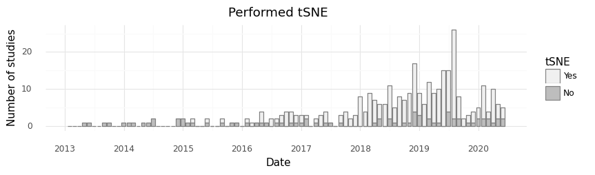
<ggplot: (8746838267525)>
#plot number of studies performing pseudoanalysis over time
tdf = df[['Date', 'Pseudotime', 'DOI']].dropna()
tdf['Date'] = pd.to_datetime(tdf['Date'], format='%Y%m%d')
per_month = (
tdf
.groupby('Pseudotime')
.resample('1M', on='Date')
.count()['DOI']
.reset_index()
)
per_month['Pseudotime'] = (
pd.Categorical(
per_month['Pseudotime'],
categories=['Yes', 'No']
)
)
p.options.figure_size = (9, 2)
fig = (
p.ggplot(p.aes(x='Date', y='DOI', fill='Pseudotime'), data=per_month.query('Date > @ts("20130101T010101")'))
+ p.geom_bar(stat='identity', color='grey')
+ p.theme_minimal(base_family='Arial')
+ p.scale_x_datetime(breaks=date_breaks('1 years'), labels=date_format('%Y'))
+ p.labs(y='Number of studies', title='Perfomed pseudotime analysis')
+ p.scale_fill_brewer(palette='Greys')
)
fig.save('pseudotime_over_time.pdf')
fig
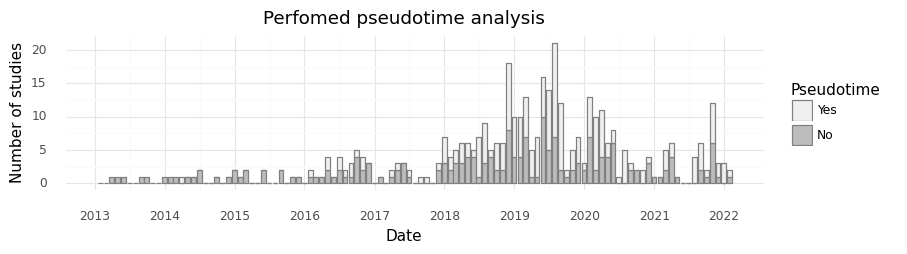
<ggplot: (8746838276289)>
tdf = df.assign(Authors = df['Authors'].str.split(', ')).explode('Authors')
cts_ = tdf.resample('1M', on='Date').count().index[1]
unique_authors = {}
for cts_ in tdf.resample('1M', on='Date').count().index:
unique_authors[cts_] = tdf.query('Date < @cts_')[['Authors']].nunique()
unique_authors = pd.DataFrame(unique_authors).T.reset_index().rename(columns={'index': 'Date'})
p.options.figure_size = (9, 5)
fig = (
p.ggplot(p.aes(x='Date', y='Authors'), unique_authors)
+ p.geom_line()
+ p.scale_y_log10()
+ p.scale_x_datetime(
breaks=date_breaks('3 years'),
labels=date_format('%Y')
)
+ p.labs(y='Unique authors')
+ p.theme_minimal(base_family='Arial')
)
fig.save('unique_authors.pdf')
fig
<ggplot: (8746838609758)>
unique_authors['authors_pct_change'] = (
unique_authors['Authors']
.pct_change()
.replace(0., np.nan)
)
doubling_time = (
unique_authors
.assign(year = unique_authors['Date'].dt.year)
.groupby('year')
.apply(lambda d: np.log(2) / np.log(1 + d['authors_pct_change'].mean()))
.to_frame()
.rename(columns={0: 'doubling_time'})
.reset_index()
)
doubling_time
| year | doubling_time | |
|---|---|---|
| 0 | 2002 | NaN |
| 1 | 2003 | NaN |
| 2 | 2004 | 0.781184 |
| 3 | 2005 | 3.280252 |
| 4 | 2006 | 6.382453 |
| 5 | 2007 | NaN |
| 6 | 2008 | 4.609732 |
| 7 | 2009 | 1.971059 |
| 8 | 2010 | 10.179891 |
| 9 | 2011 | 12.736172 |
| 10 | 2012 | 5.281293 |
| 11 | 2013 | 8.969883 |
| 12 | 2014 | 13.103978 |
| 13 | 2015 | 9.772672 |
| 14 | 2016 | 14.174734 |
| 15 | 2017 | 17.410062 |
| 16 | 2018 | 13.156136 |
| 17 | 2019 | 16.272265 |
| 18 | 2020 | 18.603195 |
| 19 | 2021 | 46.637914 |
| 20 | 2022 | 58.238266 |
p.options.figure_size = (9, 5)
(
p.ggplot(p.aes(x='year', y='doubling_time'), doubling_time)
+ p.geom_point()
+ p.scale_y_log10()
+ p.theme_minimal(base_family='Arial')
)
<ggplot: (8746838256625)>
unique_authors['doubing_time'] = (
(np.log(2) / np.log(1 + unique_authors['authors_pct_change']))
.replace([np.inf, -np.inf], np.nan)
)
p.options.figure_size = (9, 5)
(
p.ggplot(p.aes(x='Date', y='doubing_time'), unique_authors)
+ p.geom_point()
+ p.scale_y_log10()
+ p.theme_minimal(base_family='Arial')
)
<ggplot: (8746835812075)>
# Check top 7 journals.
top_journals = (
df['Journal']
.value_counts()
.head(7)
.to_frame()
.reset_index()
.rename(columns={'index': 'Journal', 'Journal': 'Studies'})
)
top_journals
| Journal | Studies | |
|---|---|---|
| 0 | bioRxiv | 194 |
| 1 | Nat Commun | 125 |
| 2 | Cell | 117 |
| 3 | Nature | 108 |
| 4 | Cell Reports | 94 |
| 5 | Science | 68 |
| 6 | Nat Immunol | 36 |
# Check top 7 most common tissues.
tdf = df.assign(Tissue = df['Tissue'].str.split(' & ')).explode('Tissue')
top_tissues = (
tdf['Tissue']
.value_counts()
.to_frame()
.reset_index()
.rename(columns={'index': 'Tissue', 'Tissue': 'Studies'})
.head(7)
)
top_tissues
| Tissue | Studies | |
|---|---|---|
| 0 | Brain | 249 |
| 1 | Culture | 184 |
| 2 | Blood | 83 |
| 3 | Lung | 47 |
| 4 | Bone marrow | 43 |
| 5 | Pancreas | 38 |
| 6 | Heart | 37 |
# Number of studies with preprints in the biorxiv.
df['did_bioRxiv'] = df['bioRxiv DOI'].fillna('?').map(lambda s: {'-': 'No', '?': 'Unknown'}.get(s, 'Yes'))
print(df['did_bioRxiv'].value_counts())
bx_fracs = df['did_bioRxiv'].value_counts()
print('Fraction of studies in biorxiv:', bx_fracs['Yes'] / bx_fracs.sum())
Unknown 809
No 420
Yes 401
Name: did_bioRxiv, dtype: int64
Fraction of studies in biorxiv: 0.2460122699386503
# plot studies in the bioRxiv over time
tdf = df[['Date', 'did_bioRxiv', 'DOI']].dropna()
tdf['Date'] = pd.to_datetime(tdf['Date'], format='%Y%m%d')
per_month = (
tdf
.groupby('did_bioRxiv')
.resample('1M', on='Date')
.count()['DOI']
.reset_index()
)
per_month['did_bioRxiv'] = (
pd.Categorical(
per_month['did_bioRxiv'],
categories=['Yes', 'No', 'Unknown'],
)
)
p.options.figure_size = (9, 2)
fig = (
p.ggplot(
p.aes(x='Date', y='DOI', fill='did_bioRxiv'),
data=per_month.query('Date > @ts("20130101T010101")')
)
+ p.geom_bar(stat='identity', color='grey')
+ p.theme_minimal(base_family='Arial')
+ p.scale_x_datetime(
breaks=date_breaks('1 years'),
labels=date_format('%Y')
)
+ p.labs(
y='Number of studies',
title='Published studies with pre-print deposited to the bioRxiv',
fill='bioRxiv'
)
+ p.scale_fill_brewer(palette='Greys')
)
fig.save('biorxiv_over_time.pdf')
fig
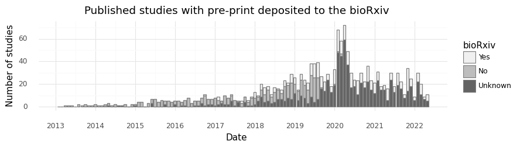
<ggplot: (8746838543345)>
tdf = df.query('Date > @ts(20190101)')
tdf['did_bioRxiv'] = tdf['bioRxiv DOI'].fillna('?').map(lambda s: {'-': 'No', '?': 'Unknown'}.get(s, 'Yes'))
print(tdf['did_bioRxiv'].value_counts())
bx_fracs = tdf['did_bioRxiv'].value_counts()
print('Fraction of studies in biorxiv:', bx_fracs['Yes'] / bx_fracs.sum())
Unknown 809
No 420
Yes 401
Name: did_bioRxiv, dtype: int64
Fraction of studies in biorxiv: 0.2460122699386503
# display breakdown of deposited studies in biorXiv over the last 10 months
display(
per_month
.pivot(index='Date', columns='did_bioRxiv', values='DOI')
.fillna(0)
.sort_index(ascending=False)
.head(10)
)
| did_bioRxiv | Yes | No | Unknown |
|---|---|---|---|
| Date | |||
| 2022-04-30 | 6.0 | 0.0 | 6.0 |
| 2022-03-31 | 5.0 | 0.0 | 8.0 |
| 2022-02-28 | 9.0 | 0.0 | 13.0 |
| 2022-01-31 | 8.0 | 0.0 | 22.0 |
| 2021-12-31 | 3.0 | 0.0 | 6.0 |
| 2021-11-30 | 7.0 | 0.0 | 18.0 |
| 2021-10-31 | 20.0 | 0.0 | 15.0 |
| 2021-09-30 | 3.0 | 0.0 | 8.0 |
| 2021-08-31 | 7.0 | 0.0 | 16.0 |
| 2021-07-31 | 11.0 | 0.0 | 19.0 |
tdf = (
df.assign(Measurement = df['Measurement'].str.split(' & '))
.explode('Measurement')
.dropna(subset=['Measurement'])
)
cats = tdf['Measurement'].value_counts().index
tdf['Measurement'] = (
tdf['Measurement']
.pipe(pd.Categorical, categories=cats)
)
# Plot kind of measurement over time vs number of cells reported.
m_idx = tdf['Measurement'].value_counts().index
clrs = list(map(lambda c: lightness(c, 0.6), ['C0', 'C1', 'C2', 'C3', 'C4']))
p.options.figure_size = (9, 2)
fig = (
p.ggplot(
p.aes(x='Date', y='Reported cells total', color='Measurement'),
data=tdf.sort_values('Measurement')
)
+ p.geom_point()
+ p.scale_y_log10()
+ p.theme_minimal(base_family='Arial')
+ p.scale_x_datetime(breaks=date_breaks('1 years'), labels=date_format('%Y'))
+ p.scale_color_manual(['k'] + clrs)
)
fig.save('all_studies.pdf')
fig
<ggplot: (8746838650778)>
# Make list of techniques
df['Tech'] = df['Technique'].map(lambda s: t_dict.get(s, 'Other'))
techs = list(
df['Tech']
.value_counts()
.sort_index()
.index
.difference(['Other'])
)
techs.append('Other')
df['Tech'] = (
pd.Categorical(
df['Tech'],
categories=techs
)
)
# plot reported number of cells vs technology used over time
p.options.figure_size = (9, 2)
fig = (
p.ggplot(
p.aes(x='Date', y='Reported cells total', fill='Tech'),
data=df.query('Measurement == "RNA-seq"')
)
+ p.geom_point(alpha=1, color='none', size=1)
+ p.scale_y_log10()
+ p.theme_minimal(base_family='Arial')
+ p.scale_x_datetime(
breaks=date_breaks('1 years'),
labels=date_format('%Y')
)
+ p.scale_fill_manual(['C0', 'C1', 'C2', 'C3', 'C4', 'black'])
+ p.labs(fill='Technology')
)
fig.save('scrnaseq_studies.pdf')
fig
<ggplot: (8746838562199)>
# Display median cells per month for last 7 months.
cells_per_study = (
df
.query('Measurement == "RNA-seq"')
.resample('1M', on='Date')[['Reported cells total']]
.median()
.tail(8).iloc[:-1]
.astype(int)
.reset_index()
.rename(columns={'Reported cells total': 'Median cells'})
)
cells_per_study
| Date | Median cells | |
|---|---|---|
| 0 | 2021-09-30 | 47262 |
| 1 | 2021-10-31 | 39657 |
| 2 | 2021-11-30 | 51656 |
| 3 | 2021-12-31 | 56412 |
| 4 | 2022-01-31 | 33197 |
| 5 | 2022-02-28 | 37397 |
| 6 | 2022-03-31 | 57467 |
# Display data for number of studies using RNA-seq for the last 10 months.
studies_per_month = (
df
.query('Measurement == "RNA-seq"')
.resample('1M', on='Date')
.count()
.tail(8)[['DOI']].iloc[:-1]
.reset_index()
.rename(columns={'DOI': 'Studies'})
)
studies_per_month
| Date | Studies | |
|---|---|---|
| 0 | 2021-09-30 | 8 |
| 1 | 2021-10-31 | 28 |
| 2 | 2021-11-30 | 22 |
| 3 | 2021-12-31 | 9 |
| 4 | 2022-01-31 | 28 |
| 5 | 2022-02-28 | 21 |
| 6 | 2022-03-31 | 12 |
monthly_stats = (
studies_per_month
.merge(cells_per_study)
.assign(
Month=studies_per_month['Date'].dt.strftime('%B %Y')
)[['Month', 'Studies', 'Median cells']]
)
monthly_stats
| Month | Studies | Median cells | |
|---|---|---|---|
| 0 | September 2021 | 8 | 47262 |
| 1 | October 2021 | 28 | 39657 |
| 2 | November 2021 | 22 | 51656 |
| 3 | December 2021 | 9 | 56412 |
| 4 | January 2022 | 28 | 33197 |
| 5 | February 2022 | 21 | 37397 |
| 6 | March 2022 | 12 | 57467 |
summary_table = pd.concat({
'Monthly statistics': monthly_stats.T,
'Top tissues': top_tissues.T,
'Top journals': top_journals.T
}).T
summary_table.to_excel('Table 1.xlsx')
summary_table
| Monthly statistics | Top tissues | Top journals | |||||
|---|---|---|---|---|---|---|---|
| Month | Studies | Median cells | Tissue | Studies | Journal | Studies | |
| 0 | September 2021 | 8 | 47262 | Brain | 249 | bioRxiv | 194 |
| 1 | October 2021 | 28 | 39657 | Culture | 184 | Nat Commun | 125 |
| 2 | November 2021 | 22 | 51656 | Blood | 83 | Cell | 117 |
| 3 | December 2021 | 9 | 56412 | Lung | 47 | Nature | 108 |
| 4 | January 2022 | 28 | 33197 | Bone marrow | 43 | Cell Reports | 94 |
| 5 | February 2022 | 21 | 37397 | Pancreas | 38 | Science | 68 |
| 6 | March 2022 | 12 | 57467 | Heart | 37 | Nat Immunol | 36 |
df.shape
(1630, 30)
# Query median number of cells reported in 2019
df.query('Measurement == "RNA-seq" and Date > @ts("20190101T010101")').median()
Reported cells total 22514.0
Number of reported cell types or clusters 14.0
Number individuals 14.0
dtype: float64
# Display median for last 7 months
df.query('Measurement == "RNA-seq"').resample('1M', on='Date').median().tail(8).iloc[:-1]
| Reported cells total | Number of reported cell types or clusters | Number individuals | |
|---|---|---|---|
| Date | |||
| 2021-09-30 | 47262.0 | 30.0 | NaN |
| 2021-10-31 | 39657.0 | 11.0 | 10.5 |
| 2021-11-30 | 51656.5 | 18.0 | 18.0 |
| 2021-12-31 | 56412.0 | 381.0 | 29.0 |
| 2022-01-31 | 33197.0 | 8.0 | 8.0 |
| 2022-02-28 | 37397.0 | 18.0 | 7.5 |
| 2022-03-31 | 57467.0 | NaN | 12.0 |
(
df
.query('Measurement == "RNA-seq" and Date > @ts("20200101T010101")')
.resample('1M', on='Date')
.sum()
.tail(8)[['Reported cells total']].iloc[:-1]
.median()
)
Reported cells total 1114798.0
dtype: float64
# Plot total number of cells in studies published each month over time
rna_df = df.query('Measurement == "RNA-seq"').resample('M', on='Date').sum().reset_index()
p.options.figure_size = (9, 2)
fig = (
p.ggplot(p.aes(x='Date', y='Reported cells total'), data=rna_df.query('`Reported cells total` > 0'))
+ p.geom_bar(stat='identity')
+ p.scale_y_log10()
+ p.theme_minimal(base_family='Arial')
+ p.scale_x_datetime(breaks=date_breaks('1 years'), labels=date_format('%Y'))
+ p.labs(y='Cells per month')
)
fig.save('cells_per_month.pdf')
fig
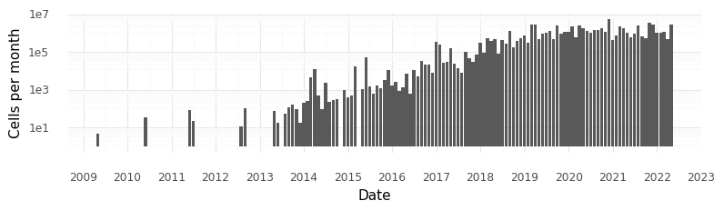
<ggplot: (8746832262217)>
df.query('Date > @ts("20200101T010101")')['Reported cells total'].sum()
49433519.0
# Plot median number of cells in studies each month
median_rna_df = df.query('Measurement == "RNA-seq"').resample('1M', on='Date').median().reset_index()
p.options.figure_size = (9, 2)
fig = (
p.ggplot(p.aes(x='Date', y='Reported cells total'), data=median_rna_df.query('`Reported cells total` > 0'))
+ p.geom_bar(stat='identity')
+ p.scale_y_log10()
+ p.theme_minimal(base_family='Arial')
+ p.scale_x_datetime(breaks=date_breaks('1 years'), labels=date_format('%Y'))
+ p.labs(y='Median cells \nper study \nper month')
)
fig
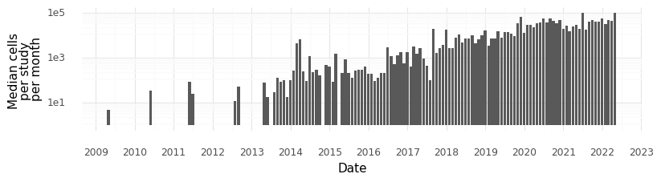
<ggplot: (8746835813843)>
# Take a look at the last 5 entries in the dataset (newest studies)
df.tail().T
| 1625 | 1626 | 1627 | 1628 | 1629 | |
|---|---|---|---|---|---|
| Shorthand | Borcherding et al BAdvances | Macnair et al bioRxiv | Karlsson et al bioRxiv | Fei et al RSquare | Omata et al JBMRP |
| DOI | 10.1182/bloodadvances.2021005991 | 10.1101/2022.04.06.487263 | 10.1101/2022.04.09.487529 | 10.21203/rs.3.rs-1544600/v1 | 10.1002/jbm4.10631 |
| Authors | Nicholas Borcherding, Kevin J Severson, Nichol... | Will Macnair, Daniela Calini, Eneritz Agirre, ... | Kasper Karlsson, Moritz Przybilla, Hang Xu, Er... | Lijiang Fei, Haide Chen, Lifeng Ma, Weigao E, ... | Yasunori Omata, Hiroyuki Okada, Steffen Uebe, ... |
| Journal | Blood Advances | bioRxiv | bioRxiv | RSquare | JBMR Plus |
| Title | Single-cell analysis of Sézary syndrome reveal... | Single nuclei RNAseq stratifies multiple scler... | Experimental evolution in <i>TP53</i> deficien... | Systematic identification of cell fate regulat... | Interspecies Single‐Cell <scp>RNA</scp> ‐Seq A... |
| Date | 2022-04-07 00:00:00 | 2022-04-10 00:00:00 | 2022-04-11 00:00:00 | 2022-04-11 00:00:00 | 2022-04-19 00:00:00 |
| bioRxiv DOI | NaN | 10.1101/2022.04.06.487263 | 10.1101/2022.04.09.487529 | 10.21203/rs.3.rs-1544600/v1 | NaN |
| Reported cells total | 50000.0 | 740000.0 | 31606.0 | 520801.0 | 8702.0 |
| Organism | Human | Human | Human | Mouse | Human, Mouse |
| Tissue | Blood, Tumor | Brain | Culture | Brain, Heart, Intestine, Kidney, Liver, Lung, ... | Blood, Bone marrow |
| Technique | NaN | Chromium | Chromium | Microwell-seq | Chromium |
| Data location | NaN | NaN | https://doi.org/10.5281/zenodo.6401895 | GSE178217 | NaN |
| Panel size | NaN | NaN | NaN | NaN | NaN |
| Measurement | RNA-seq | RNA-seq | RNA-seq | RNA-seq | RNA-seq |
| Cell source | T cells | NaN | NaN | NaN | Differentiated into osteoclasts |
| Disease | NaN | Multiple sclerosis | NaN | NaN | NaN |
| Contrasts | NaN | NaN | NaN | NaN | NaN |
| Developmental stage | NaN | NaN | NaN | E10.5, E12.5 | NaN |
| Number of reported cell types or clusters | NaN | NaN | NaN | NaN | 11.0 |
| Cell clustering | NaN | NaN | NaN | NaN | NaN |
| Pseudotime | NaN | NaN | NaN | NaN | NaN |
| RNA Velocity | NaN | NaN | NaN | NaN | NaN |
| PCA | NaN | NaN | NaN | NaN | NaN |
| tSNE | NaN | NaN | NaN | NaN | NaN |
| H5AD location | NaN | NaN | NaN | NaN | NaN |
| Isolation | NaN | NaN | NaN | NaN | NaN |
| BC --> Cell ID _OR_ BC --> Cluster ID | NaN | NaN | NaN | NaN | NaN |
| Number individuals | NaN | 83.0 | 3.0 | NaN | NaN |
| did_bioRxiv | Unknown | Yes | Yes | Yes | Unknown |
| Tech | Other | Chromium | Chromium | Other | Chromium |
df_ = df.query('Measurement == "RNA-seq"')
formula = 'Q("Number of reported cell types or clusters") ~ Q("Reported cells total")'
df_['data_scale'] = df_['Reported cells total'].pipe(np.log10).pipe(pd.qcut, 5)
def get_regression_coeff(d):
c = (
smf.ols(formula=formula, data=d)
.fit()
.params['Q("Reported cells total")']
)
return c
def predict_number_celltypes(d):
fit = (
smf.ols(formula=formula, data=d)
.fit()
)
return d.assign(p_ = fit.predict(d))
df_ = df_.groupby('data_scale').apply(predict_number_celltypes)
df_.groupby('data_scale').apply(get_regression_coeff).pipe(np.reciprocal)
data_scale
(0.3, 2.924] 235.824576
(2.924, 3.722] 682.660882
(3.722, 4.264] 3596.309909
(4.264, 4.738] 4232.802700
(4.738, 6.609] 5517.574856
dtype: float64
# plot number of reported cell types/clusters vs total number of cells
p.options.figure_size = (6, 4)
fig = (
p.ggplot(
p.aes(
x='Reported cells total',
y='Number of reported cell types or clusters',
group='data_scale'
),
data=df_
)
+ p.geom_point(alpha=1, size=2)
+ p.scale_x_log10()
+ p.scale_y_log10()
+ p.geom_line(p.aes(y='p_'), color='r', size=1)
+ p.labs(color='Technology')
+ p.theme_minimal(base_family='Arial')
)
fig.save('clusters_per_cells.pdf')
fig
<ggplot: (8746838617884)>
tdf = df.assign(Tissue = df['Tissue'].str.split(', ')).explode('Tissue')
t_dict = {k: k for k in tdf.query('Tissue not in ["Culture", "Tumor", "Embryo"]')['Tissue'].value_counts().head(11).index}
tdf['Tissue_'] = tdf['Tissue'].map(lambda s: t_dict.get(s, 'Other'))
per_month = (
tdf
.groupby('Tissue_')
.resample('1M', on='Date')
.count()['DOI']
.reset_index()
.query('Tissue_ != "Other"')
)
p.options.figure_size = (9, 2)
fig = (
p.ggplot(
p.aes(x='Date', y='DOI', fill='Tissue_'),
data=per_month.query('Date > @ts("20130101T010101")')
)
+ p.geom_bar(stat='identity', color='grey')
+ p.theme_minimal(base_family='Arial')
+ p.scale_x_datetime(
breaks=date_breaks('1 years'),
labels=date_format('%Y')
)
+ p.labs(y='Number of studies')
)
fig
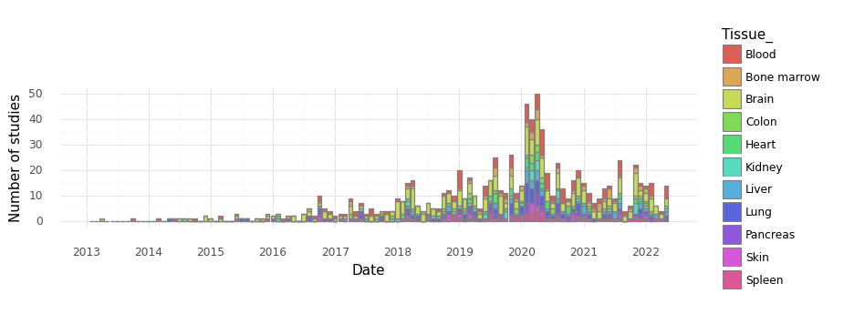
<ggplot: (8746838081859)>
tdf = df.copy()
exclude_tissues = ["Culture", "Tumor", "Embryo", "Whole organism", "Organoid"]
t_dict = {k: k for k in tdf.query('Tissue not in @exclude_tissues')['Tissue'].value_counts().head(11).index}
tdf['Tissue_'] = tdf['Tissue'].map(lambda s: t_dict.get(s, 'Other'))
tdf['Tissue_'].value_counts()
Other 1014
Brain 249
Blood 83
Lung 47
Bone marrow 43
Pancreas 38
Heart 37
Skin 28
Kidney 27
Liver 22
Spleen 21
Eye 21
Name: Tissue_, dtype: int64
t_ = pd.Categorical(tdf['Tissue_'])
idx = tdf['Tissue_'].value_counts().index.drop('Other').append(pd.Index(['Other']))
tdf['Tissue_'] = pd.Categorical(tdf['Tissue_'], categories=idx)
p.options.figure_size = (11, 7)
fig = (
p.ggplot(p.aes(x='Reported cells total', y='Number of reported cell types or clusters'), tdf)
+ p.geom_point()
+ p.scale_x_log10()
+ p.scale_y_log10()
+ p.theme_minimal(base_family='Arial')
+ p.stat_smooth(method='lm', se=False, color='red', size=0.66)
+ p.facet_wrap('~Tissue_', ncol=4)
)
fig.save('clusters_per_cells_by_tissue.pdf')
fig
<ggplot: (8746831993896)>
formula = formula = 'np.log(Q("Number of reported cell types or clusters")) ~ np.log(Q("Reported cells total"))'
def get_coeff_pval(d):
c = (
smf.ols(formula=formula, data=d)
.fit()
.pvalues['np.log(Q("Reported cells total"))']
)
return c
tdf.groupby('Tissue_').apply(get_coeff_pval) < 0.05
Tissue_
Brain True
Blood True
Lung True
Bone marrow True
Pancreas True
Heart True
Skin False
Kidney False
Liver False
Spleen True
Eye True
Other True
dtype: bool